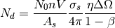

MayersSampleCorrection dialog.
Table of Contents
| Name | Direction | Type | Default | Description |
|---|---|---|---|---|
| InputWorkspace | Input | MatrixWorkspace | Mandatory | Input workspace with X units in TOF. The workspace must also have a sample with a cylindrical shape and an instrument with a defined source and sample position. |
| MultipleScattering | Input | boolean | False | If True then also correct for the effects of multiple scattering.Please note that the MS correction assumes the scattering is elastic. |
| MSEvents | Input | number | 10000 | Controls the number of second-scatter events generated. Only applicable where MultipleScattering=True. |
| MSRuns | Input | number | 10 | Controls the number of simulations, each containing MSEvents, performed. The final MS correction is computed as the average over the runs. Only applicablewhere MultipleScattering=True. |
| OutputWorkspace | Output | MatrixWorkspace | Mandatory | An output workspace. |
Calculates and applies corrections due to the effects of absorption, and optionally multiple scattering, to the signal and error values for a given workspace. The full background to the algorithm is described by Lindley et al. [1] and is briefly described here.
The aim is to correct the number of neutrons detected at a given detector ( ) to compute the
number of incident neutrons (
) to compute the
number of incident neutrons ( ):
):

where  is the sample number density,
is the sample number density,  is the sample volume,
is the sample volume,  is the self-shielding factor,
is the self-shielding factor,
 is the scattering cross section,
is the scattering cross section,  is the detector efficiency,
is the detector efficiency,  is the solid
angle and
is the solid
angle and  is the ratio of twice to once scattered intensity.
is the ratio of twice to once scattered intensity.
The following assumptions are made:
the sample shape is a cylinder
The input time of flight range combined with the cylinder radius ( ) and scattering cross-sections gives a range
of
) and scattering cross-sections gives a range
of  for the cylinder, where
for the cylinder, where  is the inverse attenutation length. The range is divided
in to a discrete number of points for each point:
is the inverse attenutation length. The range is divided
in to a discrete number of points for each point:
A weighted least-squares fit is applied to both the set of attenuation and multiple scattering factors to allow interpolation of the correction factor from any time-of-flight value in the input range. For each time-of-flight value the factor is computed from the fit coefficients and the correction applied multiplicatively:

The above procedure is repeated separately for each spectrum in the workspace.
Example - Correct Vanadium For Both Absorption & Multiple Scattering
# Create a fake workspace with TOF data
sample_ws = CreateSampleWorkspace(Function='Powder Diffraction',
NumBanks=1,BankPixelWidth=1,XUnit='TOF',
XMin=1000,XMax=10000)
# Set meta data about shape and material
cyl_height_cm = 4.0
cyl_radius_cm = 0.25
material = 'V'
num_density = 0.07261
SetSample(sample_ws,
Geometry={'Shape': 'Cylinder', 'Height': cyl_height_cm,
'Radius': cyl_radius_cm, 'Center': [0.0,0.0,0.0]},
Material={'ChemicalFormula': material, 'SampleNumberDensity': num_density})
# Run corrections
corrected_sample = MayersSampleCorrection(sample_ws,
MultipleScattering=True)
# Print a bin
print "Uncorrected signal: {0:.4f}".format(sample_ws.readY(0)[25])
print "Corrected signal: {0:.4f}".format(corrected_sample.readY(0)[25])
Output:
Uncorrected signal: 0.0556
Corrected signal: 0.0120
| [1] | Lindley, E.J., & Mayers, J. Cywinski, R. (Ed.). (1988). Experimental method and corrections to data. United Kingdom: Adam Hilger. - https://inis.iaea.org/search/search.aspx?orig_q=RN:20000574 |
Categories: Algorithms | CorrectionFunctions\AbsorptionCorrections